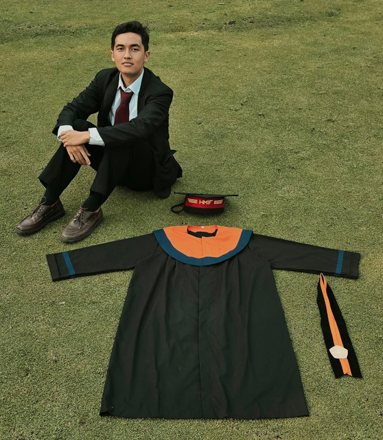

AI & Machine Learning
TensorFlow · Keras · Scikit-learn
Transfer Learning · Evaluasi Model
Halo, saya Rizki Tazidi Zayd.
Mengubah rasa ingin tahu menjadi solusi nyata melalui artificial intelligence, computer vision, dan pengembangan aplikasi.

01 / THE PERSON BEHIND THE CODEInstitut Teknologi Nasional Bandung
IPK 3.79 / 4.00Saya Rizki, lulusan Informatika ITENAS dengan fokus pada Artificial Intelligence, Computer Vision, dan aplikasi berbasis machine learning serta deep learning.
Dari klasifikasi spesies tanaman hingga sistem informasi geografis, saya menikmati proses memahami masalah, bereksperimen, dan membawanya menjadi aplikasi yang bisa digunakan.
Pengalaman di BRIN, laboratorium, dan organisasi mengajarkan saya untuk berkolaborasi dan menyederhanakan hal kompleks. Saya terbuka untuk mempelajari teknologi dan bidang baru.
Lihat portofolio lengkap ↓Dari riset hingga implementasi.
Klik proyek untuk melihat proses di baliknya.
Menampilkan 4 proyek
Terus belajar, bereksperimen,
dan berkembang.
TensorFlow · Keras · Scikit-learn
Transfer Learning · Evaluasi Model
OpenCV · MobileNetV3 · YOLOv8
Image Processing · TensorFlow Lite
Laravel · Flutter · Leaflet · API
PHP · JavaScript · Dart
Python · Java · C++ · Git · GitHub
MySQL · PostgreSQL · Firebase · Docker · AWS
Siap belajar, berkontribusi, dan mengubah tantangan menjadi solusi yang bermakna.